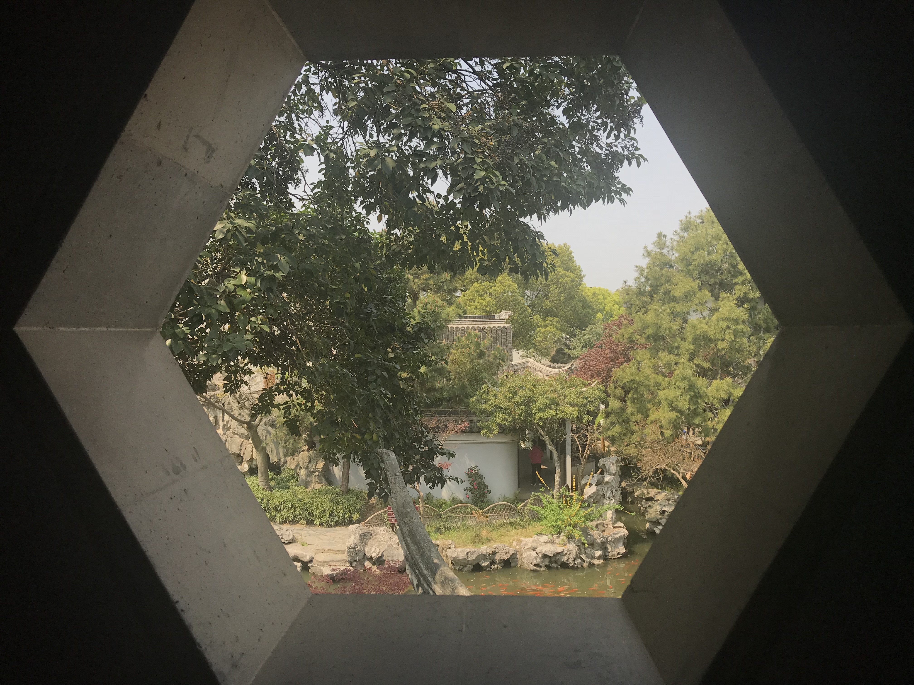
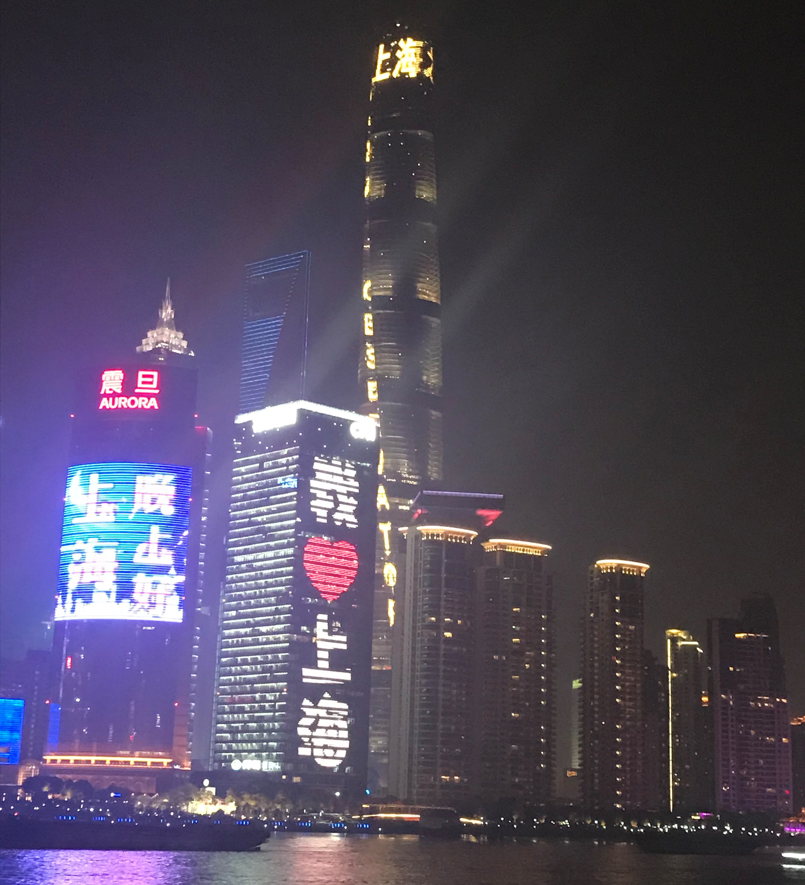
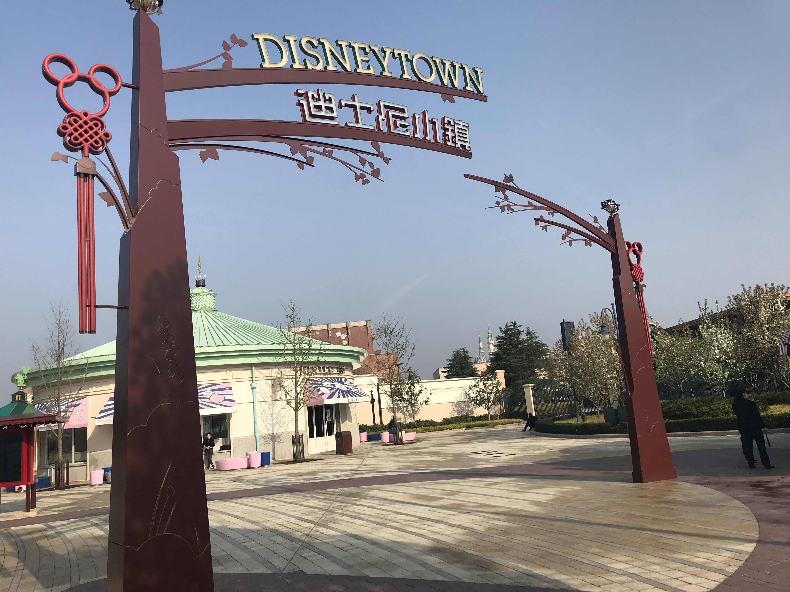
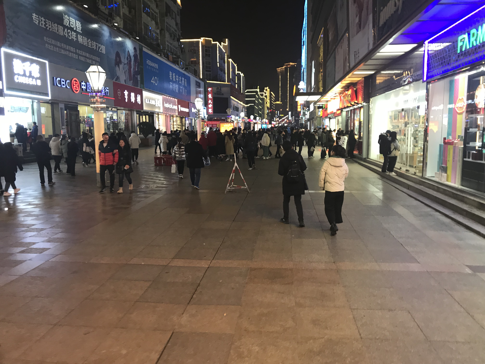

THANK YOU
2019
之前总是想着这一年什么时候快点过去呀，然后每到了最后一天，却总是感觉五味杂陈，果然还是有着许多不舍吧。
—— w.t
一年。
不知不觉一年又过去了，平时总能感觉时间过得很慢，
唯独只有回顾的时候才会发现时光匆匆。
一年365天，
很长也很短，不长也不短。
每到一年中的最后时刻，
难免就要回顾一番，感慨万千。
每次都会觉得新的一年会更好。
却免不了差强人意。
希望明年会有所不同吧。
有时也会略感孤单，不过貌似已经有些好转？
—— sometimes
既往。
2018 的时候曾对 2019 想过许多，既有计划也有期盼，
然而，如今细细数来，
其之实现者难有十之五六。
也已经忘记了这个时候比起去年的此时，
是否所有进步呢？
大概是没有的吧。
要说有没有想回到2019一开始的时候，
那肯定是有的，
今年也断断续续的发生了许多事情，
大事小事，好事坏事。
若是有重来的机会，
定然不会有所疑虑。
但是却无实现之可能，
生活还是要不顾一切的向前的。
不过这一年也有不少值得为之高兴的事情，
姑且还是令人留恋的。
新的一年即将到来，
还是照例为明年盘算一番吧，
生活不只是眼前的苟且，还有未来的苟且。
—— 鲁迅：我说的
生活。
今年也曾去别处玩过几次春天，夏天，秋天，冬天
却没有留下多少照片，
可能是因为我对生活不够留意吧。

苏州

上海夜景

不过只去了迪士尼小镇
杭州西湖

青岛台东
明年应该就没有机会出去玩了吧，
也有好多事情要忙，
如果可以的话，
我还是想和你们去更多的地方，
一起逛到夜深。
时间还请再延长一些。
可能没有机会了？或许吧。
—— NO WAY
学习。
学习的话，似乎也没有什么太大的变化
课上也常常走神，
平时普普通通的上自习，
平平淡淡的学习，
也没有什么出彩的成果。
其实还是想多学点新东西的，
但总有别的事分散了精力。
今年连博文都没怎么写，
也唯有寄希望于来年了。
来年就要准备考研了
也会变得更加忙碌，
希望新的一年能够不负初心吧。
人生いつでも選択
何かを切り捨てて生きてきたの
これから ずっとずっと選ぶの
生きてりゃ悩みはつきもの
何かを考えて進んでゆく
時間は ずっとずっと 止まらない
何かを切り捨てて生きてきたの
これから ずっとずっと選ぶの
生きてりゃ悩みはつきもの
何かを考えて進んでゆく
時間は ずっとずっと 止まらない
—— 「Labyrinth」♫︎
展望。
总结其实也并不只是为了抱怨什么没做，而是看一下有哪些事抱有遗憾，
哪些是应当继续去做，
在新的计划中补上曾想做的。
选择和困难总会有，
但是生活并不会停下来。
与其纠结过去，
不如放眼未来。
2019 年对我来说，
有收获，也有失败。
对于即将到来的 2020
总还是要说些好话的。
祈愿 2020 年，
自己，家人和朋友，
身体健康，万事皆顺；
自己也要多多努力。
如果真的能够实现，
那就真的再好不过了。
今后也请多多关照啊。
祝此刻的你新年快乐。
祝此刻的你新年快乐。
willimt
2019.12.31
@2019 willimt
sometimes ever, sometimes never.